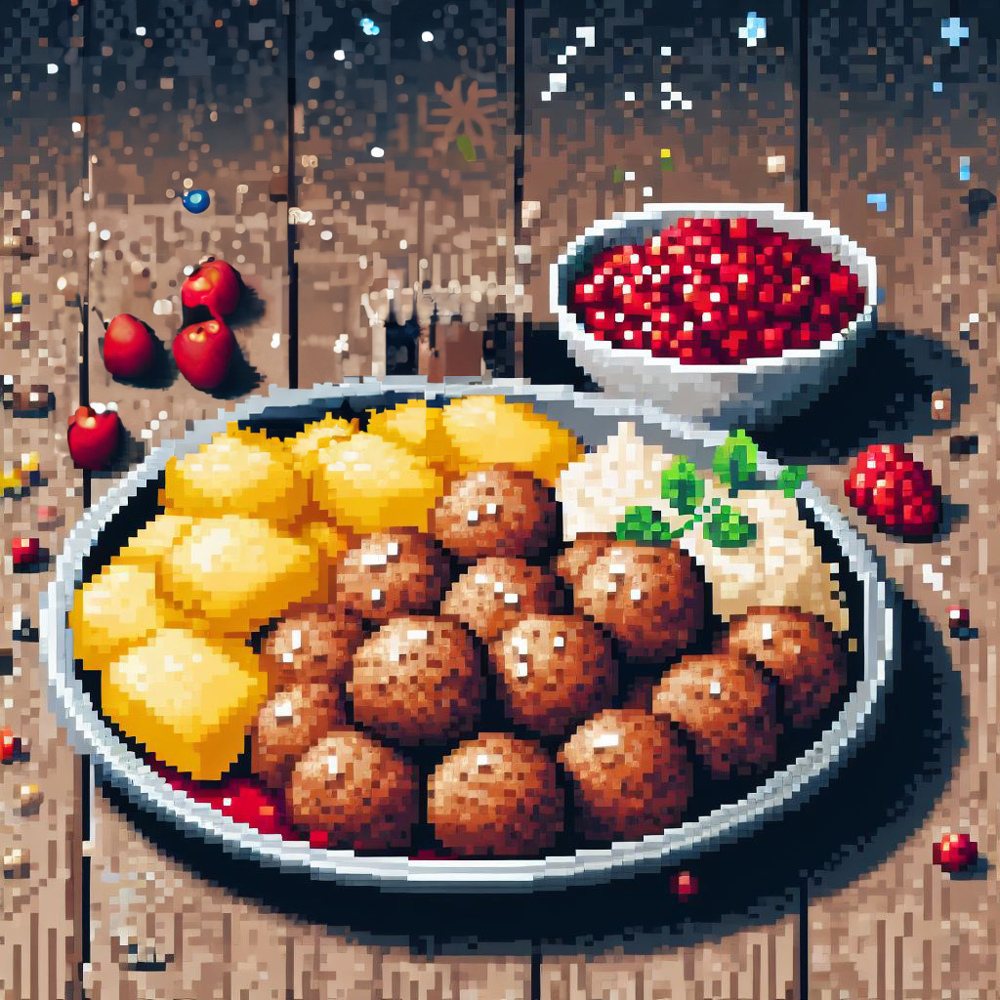
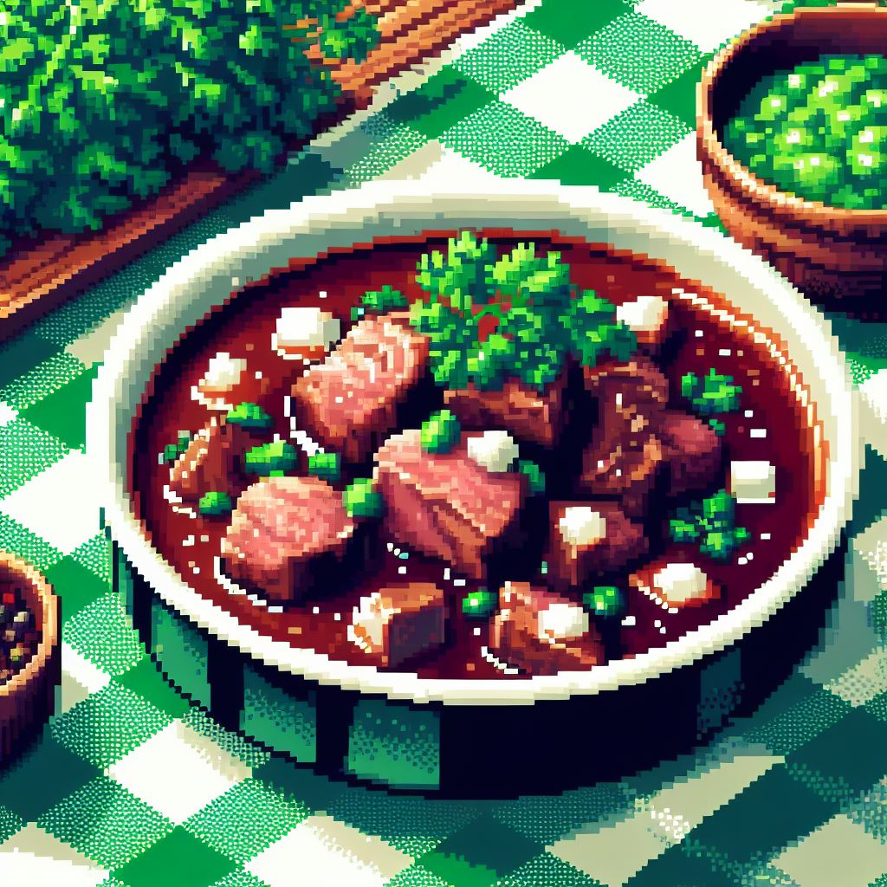
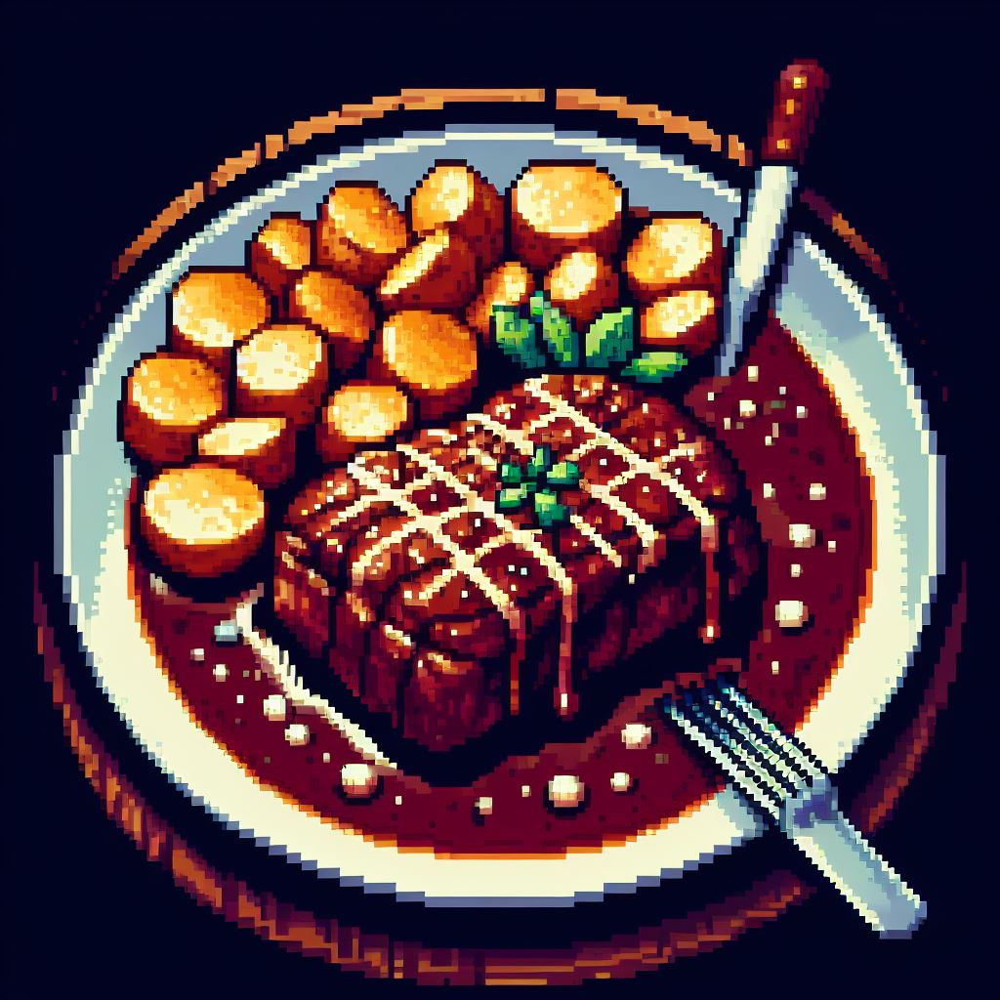

Medisterkaker

Gilde medisterfarse - bruk to ss form til kaker. Stek i godt smør.
Bruk smøret til å brune løk og mel.
Ha i kraft eller fond og et par ss seterrømme.
Mormors Lammefrikasé

- Lammekjøtt i biter
- Grønnsaker
- Hvitløk
- Maizena
Kok opp kjøttet, la det trekke i to timer. Tilsett grønnsaker og smak til med salt og pepper. Jevn med maizena.
Bankekjøtt

Skjær tynne skiver av oksekjøtt (3/4-1 cm), vend i mel, salt og pepper.
Stek i panne, tilsett fløte, melk og rømme. Smak til. Kok i 45-60 minutter. Server med ris eller poteter.
Fiskegrateng
- 1 dyp tallerken kokt fisk
- 100 g kokt makaroni
- 1 løk
- 2 ss smør
- 2 ss mel
- ca. 5 dl melk
- 2 egg
- Salt, pepper
Lag en tykk hvit saus. Ha fisk, kokt makaroni, og hakket løk i sausen.
Rør godt og tilsett eggeplommene. Smak til med krydder. Pisk hviten og vend inn.
Fyll blandingen i smurt ildfast form, strø knust kavring over.
Stek i varm ovn (230°C) i 30-40 minutter. Server med smeltet smør eller hvit saus og poteter.
Boller
Bland det tørre tilsett lunkekt melk og jevning. Elt i maskinen i 10 min tilsett smør i terningerog let i
10 min til. heve til dobbelstørrelse . Kna deigen smmen og elt ev inn rosiner
dl i 12 emner på stekebrett etterhev i ca 30 min pensle med egg stek 220 c midt i ovnen ca 12 min